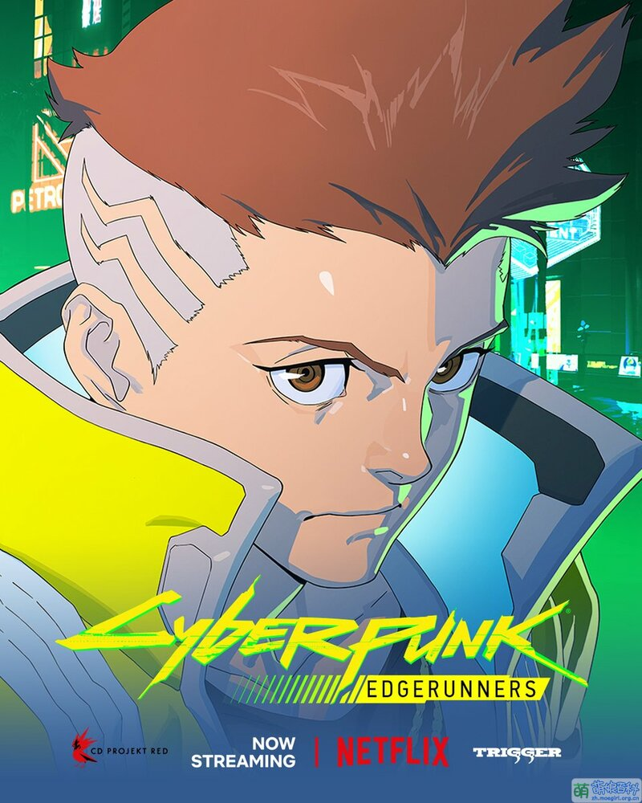

大卫·马丁内斯
“生的伟大，死得光荣”
|
||||||
| 首页 | 家乡 | 教程 | 图片 | 视频 | 留言 | |
大卫·马丁内斯“生的伟大，死得光荣” |
||||||
简介 总是穿着母亲遗留下的黄色夹克，梳着朋克头。就读于需要高额学费的荒坂学院，成绩优秀。 因多重原因而成为赛博朋克小队成员。 有着异于常人的身体素质，可以在一天内多次使用「斯安威斯坦」。
|
 |
经历 靠着母亲赚取的学费，在荒坂学院就读，但时常因贫穷遭到欺负。与义体医生熟识，时常透过义体医生拿取盗版软件，且非常喜欢看吉米·黑咲导演的超梦。 在荒坂学院上课时因使用义体医生提供的来路不明的软件更新，搞爆了学院的教学系统，不但被叫了家长，还间接因此遭同学的毒打。 一直在母亲的期望下生活，学习成绩也名列前茅，直到某次与母亲在路上时被卷入一场帮派火并，因此发生车祸，只留下大卫一人。 为了出口气而找到认识的义体医生装上母亲遗留的「斯安威斯坦」，并在荒坂学院中殴打污辱母亲及过去欺负自己的田中胜男，因而遭到退学。 在地铁上与露西邂逅，因对方想窃取自己的芯片而发现对方后被强行壁咚。 因急需钱而主动提出合作，在露西的指导下开始试着使用「斯安威斯坦」进行窃取公司员工的芯片。 |
| 版权所有：信息1901顾洪旺
|